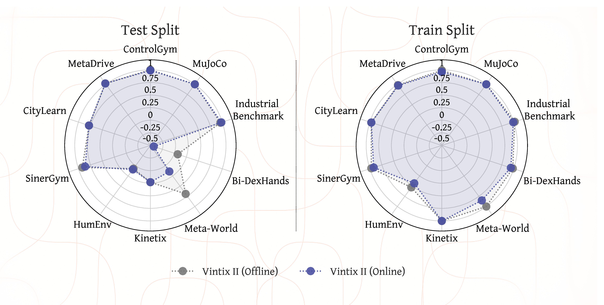
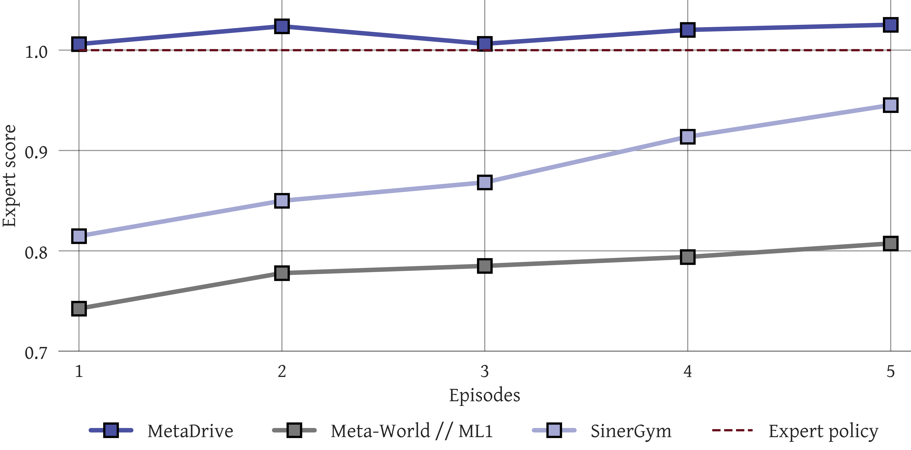
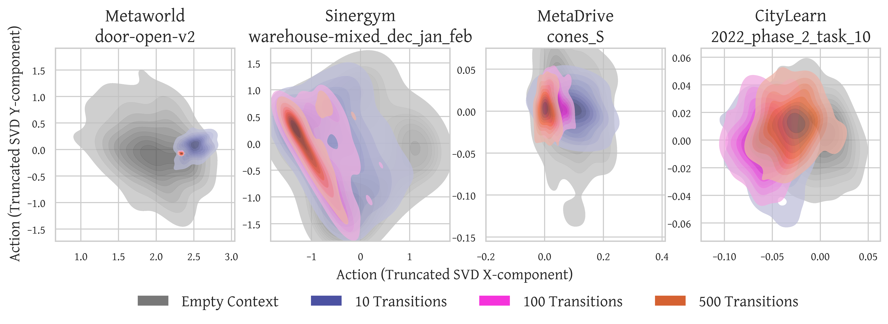

Vintix II: Decision Pre-Trained Transformer is a Scalable In-Context Reinforcement Learner
One model, many domains: in-context adaptation for continuous control via flow-based action sampling
In-context learning (ICL) has made prompt-based adaptation feel routine for large language models: a short prompt can change a model’s behavior without any parameter updates. Bringing this capability to RL promises agents that can adapt to new environments and pursue reward without task-specific fine-tuning. This in-context RL (ICRL) paradigm opens up a clear path to building large action models that can adapt from context to a wide range of unseen dynamics.
Most ICRL methods have been evaluated on small-scale benchmarks, while using them to train large, multi-domain action models has received comparatively limited attention. Our work targets this setting by training a single model that operates across diverse domains, adapts to unseen dynamics, and provides tooling to support further research in this direction.
Our approach scales Decision-Pretrained Transformers (DPT) into a single cross-domain action model trained on a wide range of continuous-control problems: robotic locomotion and manipulation, HVAC control, PDE optimization, autonomous driving, and more. Prior DPT variantions for continuous actions typically rely on Gaussian heads, which often under-represent multi-modality and can introduce a mismatch with complex action posteriors. To address this, we combine in-context conditioning with a rectified-flow objective, enabling one model to represent richer action distributions and sample actions directly at inference time. To scale training, we collect a diverse dataset covering 209 training tasks across 10 domains, plus 46 additional held-out tasks reserved for evaluation.
Domain-level performance

We evaluated our model on 209 training tasks and 46 unseen tasks in Online and Offline format. Online inference uses FIFO-style memory filling, effectively implementing a sliding attention window over past interaction history, while offline inference is performed with a fixed set of demonstrator episodes serving as the task-specific context.
On the training split, Vintix II is close to optimal on most domains under both protocols and performs slightly better in the offline. On unseen tasks, Vintix II achieves more than 67% of demonstrator performance across all domains in the offline setting and preserves this level of performance in the online scenario for all domains except Meta-World and Bi-DexHands. However, the Meta-World ML45 and Bi-DexHands ML20 splits are particularly challenging and likely require additional information to solve, which explains the performance drop. These results suggest that the model learns fully parametric in-context imitation in the offline setting and exhibits deployment-time adaptive behavior in the online setting.
Online adaptation to unseen dynamics

Normalized returns per episode during online inference indicate that our model can iteratively adapt to unseen tasks, even when no prior context is provided. In the Meta-World and SinerGym domains, performance improves over several episodes, suggesting that multiple interactions are needed to infer task-specific dynamics. In contrast, in MetaDrive the model achieves near-optimal performance after a single episode, and additional experience mainly stabilizes performance under unseen dynamics. Overall, these results suggest that the model leverages training experience to perform strongly on new tasks while also extracting information from inference-time interactions to further improve its policy.
Effect of Number of Demonstrations

To assess how the number of demonstrations in the prompt affects performance on unseen tasks, we evaluated Vintix II with demonstrator actions included in the context, varying the context length from 500 to 4000 \( (o_q,a,r) \) tuples. Performance improves with prompt size for Meta-World, Industrial-Benchmark, and SinerGym, while remaining stable across all other domains. These results suggest that augmenting the context with additional data improves model performance, or at least does not degrade it when only a few demonstrations are sufficient for successful task completion.
Progressive Concentration of Action Beliefs

Further insight is obtained by examining how the model’s action distribution changes with context length. We fix an observation and sample 100 actions from the model for different context lengths to estimate the induced action distribution. The resulting kernel density estimates (KDEs) consistently exhibit posterior-like contraction: short contexts produce broad, high-variance distributions, indicating substantial uncertainty, whereas longer contexts yield progressively sharper and more concentrated modes. These patterns suggest that Vintix II exhibits in-context posterior-sampling-like behavior, aligning with the theoretical characterization of DPT in the original work.
Strong exploitation, signs of exploration
Despite the strong results and ability to generalize to unseen setups, our model still struggles with completely new dynamics. This problem is partially addressed by adding expert demonstrations to the context, but it does not fully resolve the issue.
Successful adaptation
Turn the toggle switch clockwise
The ship’s green part must contact the blue panel and avoid the red stripe
The car must reach the end of the road without an accident
Failed adaptation
Put the green cube to the blue box
Green ball must reach the blue ball
The car must reach the end of the road without an accident
BibTeX
@article{polubarov2026vintixiidecisionpretrained,
author={Andrei Polubarov and Lyubaykin Nikita and Alexander Derevyagin and Artyom Grishin and Igor Saprygin and Aleksandr Serkov and Mark Averchenko and Daniil Tikhonov and Maksim Zhdanov and Alexander Nikulin and Ilya Zisman and Albina Klepach and Alexey Zemtsov and Vladislav Kurenkov},
title={Vintix II: Decision Pre-Trained Transformer is a Scalable In-Context Reinforcement Learner},
journal={arXiv},
volume={2604.05112},
year={2026},
}